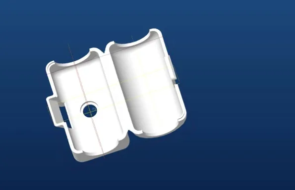
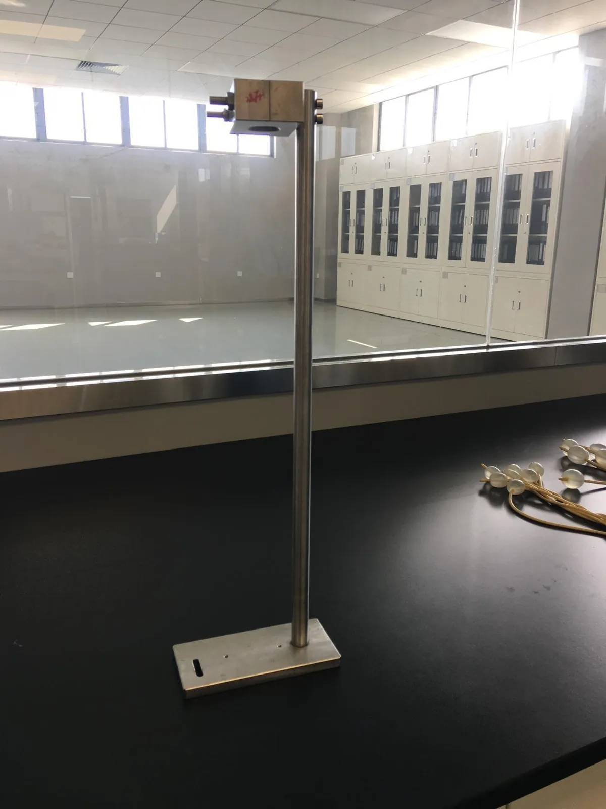
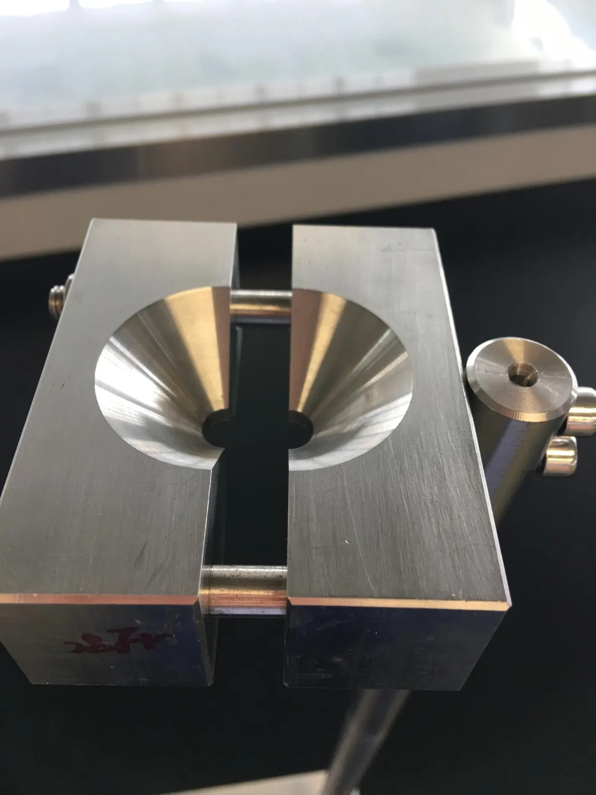
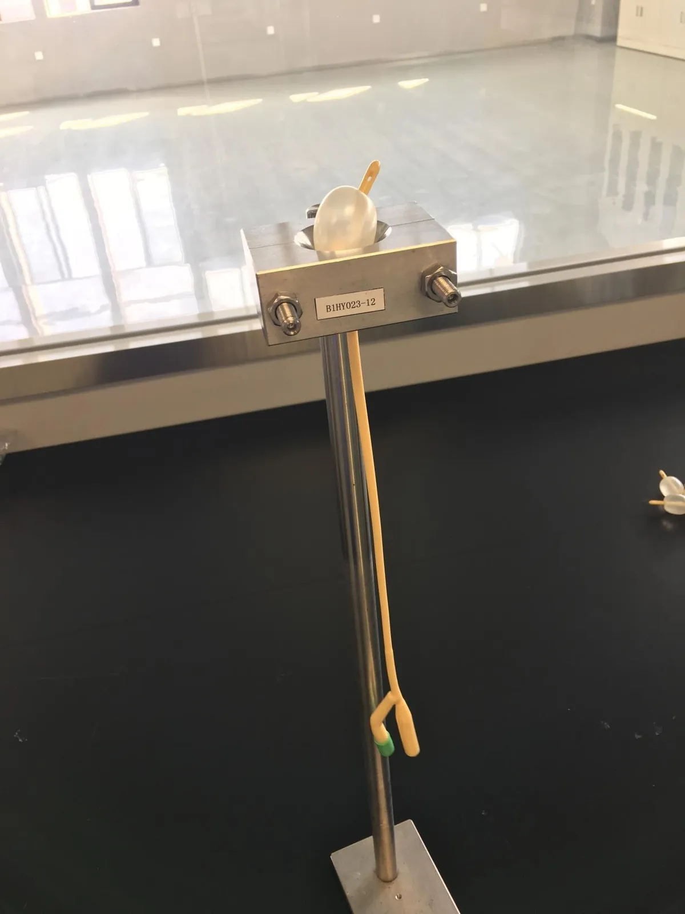
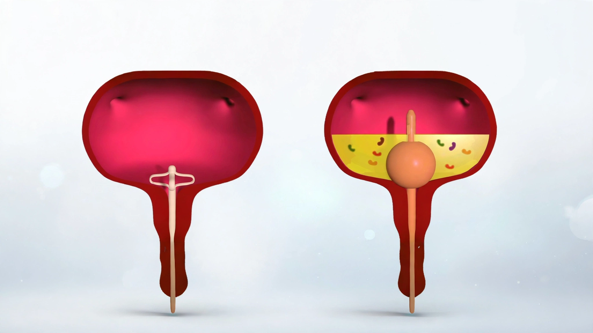
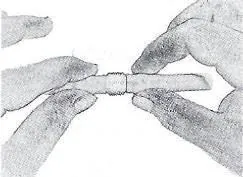
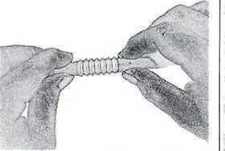
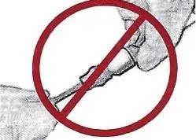
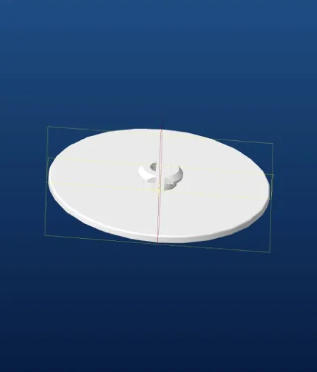

Materials, dimensions, bench-tested performance data, and the complete step-by-step Instructions for Use.

Figures drawn from the Instructions for Use, the published Lotus-vs-Foley technical comparison, and independent ASTM F623-99 bench testing.
A fraction of the Foley’s 2.5–4.5 cm tip profile.
Weight of the fully deployed 2–3 wing configuration.
Maximum indwelling duration per the Instructions for Use.
Minimum patient age — approved for pediatric use.
The fully deployed 2–3 wing configuration weighs approximately three grams.
The wing configuration is a compressible, collapsible rubber polymer — available in Silicone, TPU, PVC, and Latex. It is a backup retention mechanism only: the catheter’s primary stability comes from firm adherence to the patient’s thigh, using a Lotus Stabilizer or cross adhesive tape.
The same dimensional and mechanical differences that drive the clinical outcomes on our Clinical research page.
The standard Lotus Catheter retention mechanism — compressible rubber polymer in place of an inflatable balloon.
Tip length
Force to dislodge
Higher pressure
The same core design, adapted for four clinical scenarios. See the Products page for details on each.
Independent Bench Testing
63 siliconized latex Foley catheters, sizes 14–26 Fr, tested per ASTM F623-99 §4.3 (Inflated Balloon Response to Traction) in an FDA-registered, ISO 9000 laboratory. A 28 Fr funnel-like apparatus simulated the bladder outlet and urethra; load was applied at ~155 mm/s until the balloon pulled through. For comparison, the Lotus Catheter’s 2–3 wing configuration requires only 2–3 lb (8.9–13.3 N) to dislodge.

Test stand with the 28 Fr funnel-like apparatus

The funnel apparatus, simulating the bladder outlet and urethra

A Foley catheter, balloon inflated, seated in the apparatus before pull-through
| French Size | Inflation | Force (N) | Force (lbf) | Note |
|---|---|---|---|---|
| 14 Fr | 5 cc | 28.2 | 6.33 | — |
| 14 Fr | 10 cc | 40.0 | 8.99 | — |
| 14 Fr | 15 cc | 47.7 | 10.56 | — |
| 14 Fr | 15 cc | 39.9 | 8.97 | — |
| 14 Fr | 15 cc | 39.0 | 8.8 | (Balloon Rupture) |
| 14 Fr | 15 cc | 53.2 | 11.95 | — |
| 14 Fr | 15 cc | 49.0 | 11.01 | — |
| 14 Fr | 15 cc | 47.7 | 10.72 | — |
| 14 Fr | 15 cc | 48.0 | 10.79 | — |
| 14 Fr | 15 cc | 67.7 | 15.21 | — |
| 16 Fr | 5 cc | 26.2 | 5.88 | — |
| 16 Fr | 10 cc | 46.5 | 10.45 | — |
| 16 Fr | 15 cc | 59.5 | 13.37 | — |
| 16 Fr | 30 cc | 77.4 | 17.40 | — |
| 16 Fr | 30 cc | 86.6 | 19.46 | — |
| 16 Fr | 30 cc | 89.1 | 20.03 | — |
| 16 Fr | 30 cc | 82.0 | 18.43 | — |
| 16 Fr | 30 cc | 99.5 | 22.36 | — |
| 16 Fr | 30 cc | 84.7 | 19.04 | (Balloon Rupture) |
| 16 Fr | 30 cc | 74.8 | 16.81 | — |
| 18 Fr | 5 cc | 23.1 | 5.19 | — |
| 18 Fr | 10 cc | 51.0 | 11.46 | — |
| 18 Fr | 15 cc | 85.4 | 18.97 | — |
| 18 Fr | 30 cc | 103.1 | 23.17 | (Balloon Rupture) |
| 18 Fr | 30 cc | 97.9 | 22.00 | — |
| 18 Fr | 30 cc | 104.9 | 23.58 | — |
| 18 Fr | 30 cc | 92.9 | 20.88 | — |
| 18 Fr | 30 cc | 109.2 | 24.54 | — |
| 18 Fr | 30 cc | 118.2 | 26.57 | — |
| 18 Fr | 30 cc | 105.3 | 23.67 | — |
| 20 Fr | 10 cc | 67.0 | 15.06 | — |
| 20 Fr | 10 cc | 47.5 | 10.67 | — |
| 20 Fr | 10 cc | 58.4 | 13.12 | (Balloon Rupture) |
| 20 Fr | 10 cc | 47.8 | 10.74 | — |
| 20 Fr | 10 cc | 63.3 | 14.23 | — |
| 20 Fr | 10 cc | 61.7 | 13.87 | — |
| 20 Fr | 10 cc | 53.8 | 12.09 | — |
| 20 Fr | 10 cc | 60.7 | 13.64 | — |
| 20 Fr | 10 cc | 65.0 | 14.61 | (Balloon Rupture) |
| 20 Fr | 10 cc | 70.2 | 15.78 | — |
| 22 Fr | 5 cc | 37.1 | 8.34 | — |
| 22 Fr | 10 cc | 66.4 | 14.92 | — |
| 22 Fr | 15 cc | 101.6 | 22.84 | — |
| 22 Fr | 30 cc | 132.6 | 29.80 | — |
| 22 Fr | 30 cc | 114.0 | 25.62 | — |
| 22 Fr | 30 cc | 148.1 | 33.29 | — |
| 22 Fr | 30 cc | 143.4 | 32.23 | — |
| 22 Fr | 30 cc | 129.7 | 29.15 | — |
| 22 Fr | 30 cc | 129.2 | 29.05 | — |
| 22 Fr | 30 cc | 163.2 | 36.68 | — |
| 24 Fr | 5 cc | 45.9 | 10.31 | — |
| 24 Fr | 10 cc | 88.8 | 19.96 | — |
| 24 Fr | 15 cc | — | N/A | (Balloon Rupture) |
| 24 Fr | 30 cc | 187.8 | 42.21 | (Balloon Rupture) |
| 24 Fr | 30 cc | 169.2 | 30.03 | — |
| 24 Fr | 30 cc | 187.1 | 42.06 | — |
| 24 Fr | 30 cc | 153.7 | 34.55 | (Tube Malfunction) |
| 24 Fr | 30 cc | 161.7 | 36.35 | — |
| 24 Fr | 30 cc | 200.7 | 45.11 | — |
| 24 Fr | 30 cc | 201.2 | 45.23 | — |
| 26 Fr | 5 cc | 32.3 | 7.26 | — |
| 26 Fr | 10 cc | 79.8 | 17.93 | — |
| 26 Fr | 15 cc | 117.1 | 26.32 | — |
Balloon rupture indicates balloon failure — the force recorded is the last measurement shown before failure. Tube malfunction indicates a tear in the channel wall causing fluid leakage. For clinical context: orthopedic and gynecological studies report soft tissue tears at 12–44 N and ligament tears at 88 N — well within the range measured here for larger Foley balloon sizes.


Correct method of grasping the two latex covered rings

Correct method of opening bellows

Incorrect method — do not pull on the catheter ends

Our team can walk you through the full Instructions for Use, materials documentation, and bench-test data.